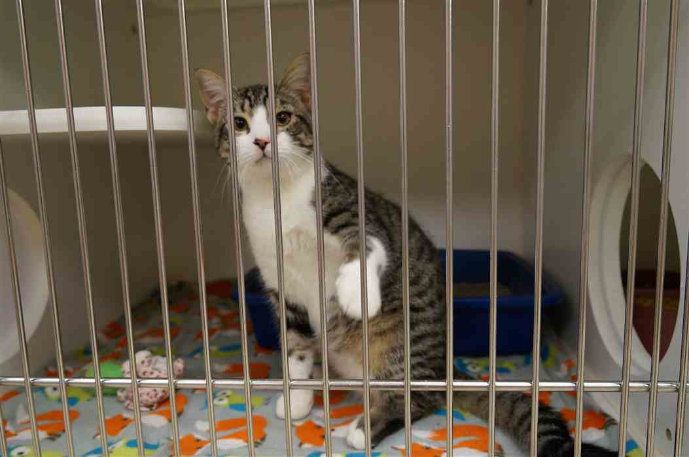

Rover is looking for a great home. A loving German Shepard with a great smile! He loves stuffed toys and is great at rescuing Timmy from a well.

Max is an Alaskan Malamute. He is very energetic and loves to get outdoors. He would be a great fit for an active, outdoor-loving family!
Animal Shelter is a nonprofit organization that finds homes for abandoned cats and dogs throughout the Portland-metro area, and provides behavior intervention when needed to improve chances of adoption. Founded in 1967, we operate an animal shelter in Portland. We also provide programs that enhance the bond between animals and people.
We participate in animal rescue operations to assist troubled animals in the Portland-metro area.
Animal Shelter is a 501 (c) nonprofit organization (EIN: 11-6101487).

Gracie is a playful adult cat who enjoys sleeping on laps and begging for tuna. Pass the time playing with Gracie with a laser pointer.
Victor is a playful adult cat who enjoys staying away from children. Live pest free with this mouse killing machine.